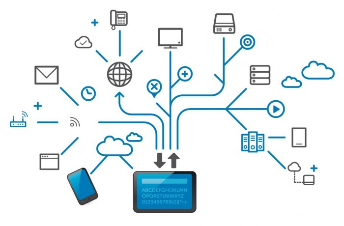

O que oferecemos?
- Planejamento de redes locais (LAN) e de longa distância (WAN).
- Instalação de cabeamento estruturado.
- Configuração de roteadores, switches e pontos de acesso Wi-Fi.
- Manutenção preventiva e corretiva de redes.

Por que escolher a iCoutech?
Nossa equipe possui ampla experiência em redes corporativas e residenciais, utilizando tecnologias avançadas para oferecer soluções personalizadas que atendem às necessidades de conectividade do seu negócio.